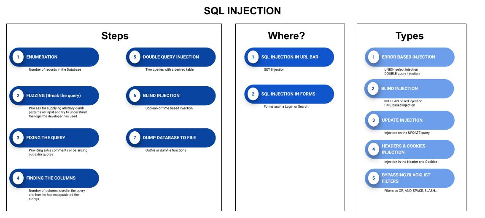

SQLi-Lab
For the purpose of demonstration, I have installed the SQLI-LABS under the “/var/www” location on my machine.
SQLI-LABS is a test bed of various lessons to explain and learn different types of SQL injections.
1. Error Based Sql Injections - Union select type.
2. Error Based Sql Injections - Double Query type.
3. Boolean Based Blind Injections.
4. Time Based Blind Injections.
5. Dumping the DB using outfile / Dumpfile.
6. POST based Sql injections Error based type - union select.
7. POST based Sql injections - Double injection type.
8. POST based Blind injections -Boolian / Time based.
9. Injection in the UPDATE query.
10. Injection in the Headers.
11. Injection in cookies.
12. Bybassing blacklist filters.
SQLI-LABS is based on Mysql Database so, for other types of DB the sintax can be different.
We'll divide the process in:
• Enumerate the application behavior
• Fuzz the application with bogus data with the goal of crashing the application
• Try to control the injection point by guessing the query used in the backend
• Extract the data from the back end database.
